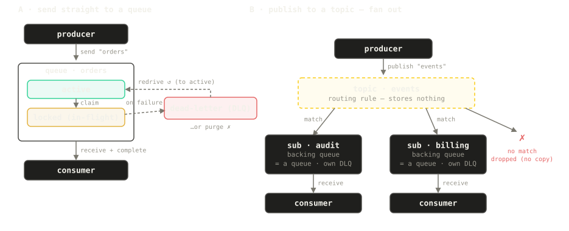

mqlite
mqlite
A message queue in a single SQLite file.
Peek-Lock delivery, retries, dead-letter queues, scheduling, dedup, FIFO groups and topic fan-out — embedded in your Go process or served as a tiny HTTP broker. Same engine, same file, your choice.
# what it solves
Three problems that keep re-appearing in every backend.
“I need background jobs, not a broker deployment.”
Zero infrastructure. Want HTTP later? The same engine runs as one ~30 MB process.
“My DB write and my event can disagree.”
The queue is your SQLite DB: business write + enqueue commit atomically.
“My hand-rolled jobs table became a bad broker.”
status column and a polling loop slowly regrow locks, retries, dead-letters — untested.Peek-Lock, retries → DLQ + redrive, FIFO groups, delays, dedup — pinned by a conformance suite.
# why mqlite
Design priorities, in order — when they conflict, the earlier one wins.
1Lightweight & embeddable
One pure-Go binary over one SQLite file. No broker cluster, no sidecar, no CGO. Start embedded; move the same code to a broker, or the storage to replicated Turso, without rewriting your app.
2Reliable under concurrency
Honestly at-least-once: new settlements require a current token and unexpired lease; idempotent send/receive/settle, single-broker crash recovery, and O(log n) claims on a deep backlog. FIFO groups stay ordered even across consumer crashes and lock expiry.
3Simple, unambiguous interface
Every operation is one HTTP POST with a JSON body — 26 routes in source v0.3.2, curl-able by
construction, exactly one settlement verb per outcome (Complete /
Abandon / Reject / Defer), no aliases. Easy for people; easy for
agents.
4Service Bus flavor, not a clone
Peek-Lock, group_id sessions, DLQ + redrive, scheduling and duplicate detection feel
familiar from Azure Service Bus — in an idiomatic-Go shape, with the
whole model documented and every claim pinned by a
conformance suite.
# the killer feature: a transactional outbox with no outbox
Because the queue is your SQLite database, a business write and its event commit in one transaction. The message exists if and only if the order does — no dual-write race, no CDC pipeline, no poller.
package main
import (
"context"
"log"
"github.com/mqlitehq/mqlite"
"github.com/mqlitehq/mqlite/engine"
)
func main() {
ctx := context.Background()
mq, _ := mqlite.OpenEmbedded(ctx, "file:./app.db")
defer mq.Close()
_ = mq.CreateQueue(ctx, "order-events", mqlite.QueueConfig{})
err := mq.Tx(ctx, func(tx *engine.EngineTx) error {
// 1) the business write, on the SAME transaction. Use tx.Context(), not the
// ctx you passed to Tx — a statement interrupted mid-transaction wedges
// a local SQLite database.
if _, err := tx.SQL().ExecContext(tx.Context(),
`INSERT INTO orders(id, total) VALUES(?, ?)`,
42, 1999); err != nil {
return err // rollback: nothing enqueued
}
// 2) enqueue — commits atomically with it:
_, err := tx.SendOne("order-events",
engine.OutMessage{Body: []byte(`{"order":42}`)})
return err
})
if err != nil {
log.Fatal(err)
}
// Either both happened, or neither did.
}# how it works
Two delivery targets, one storage story: a topic stores nothing — the thing that stores, is consumed, and can dead-letter is always a queue.

the source version described here is covered by the conformance TCK — details in Concepts; the full construction story (schema, locks, fencing, recovery) is in Internals
# the honest part
Published historical measurements from specific workloads; remeasure v0.3.2 with your payloads, concurrency and monitoring enabled before sizing production. Full method: docs/benchmark.md.
| Setup | Measured | Read this as |
|---|---|---|
| Local file DB, 12-core machine | 19.5k msg/s single · ~35k batched | an embedded queue that keeps up with your app |
| 1-vCPU / 256 MB cloud box, embedded engine | 6–7.5k msg/s batched · 1,507 msg/s drain | batch your sends and receives — that's the sweet spot |
| Remote Turso (co-located) | ~45 ms per durable commit | you're buying durability + geo-replication, not throughput |
| Memory / disk | 25–34 MB RSS · file auto-shrinks when drained | measure current peak memory with your queue, payload and monitoring load |
when NOT to use mqlite — it is a single-writer, single-node queue by design
| If you need… | Use instead |
|---|---|
| Log streaming, replay, consumer groups over history | Kafka · Redpanda · NATS JetStream |
| A clustered, highly-available multi-node broker | NATS · RabbitMQ |
| A queue inside the Postgres you already run | pgmq · River |
| Sustained six-figure msg/s on one node | not this — the single-writer model is the point, not a bug |
| “Exactly-once delivery” | nobody sells that honestly; mqlite is at-least-once, so write idempotent handlers |
# quickstart
Three ways in — they all drive the same engine. These examples pin v0.3.2; see Deployment for installation and runtime settings.
No server at all: one import, one file — the queue lives inside your process. go get github.com/mqlitehq/mqlite@v0.3.2 (Go ≥ 1.21).
package main
import (
"context"
"fmt"
"log"
"time"
"github.com/mqlitehq/mqlite"
)
func main() {
ctx := context.Background()
mq, err := mqlite.OpenEmbedded(ctx, "file:./mq.db")
if err != nil {
log.Fatal(err)
}
defer mq.Close()
if err := mq.CreateQueue(ctx, "orders", mqlite.QueueConfig{
LockDuration: 30 * time.Second,
MaxDeliveryCount: 5,
}); err != nil {
log.Fatal(err)
}
// produce
if _, err := mq.SendOne(ctx, "orders", mqlite.OutMessage{Body: []byte(`{"id":42}`)}); err != nil {
log.Fatal(err)
}
// consume (Peek-Lock): receive, do work, then settle
msgs, err := mq.Receive(ctx, "orders", mqlite.RecvOpts{Max: 10, Wait: 5 * time.Second})
if err != nil {
log.Fatal(err)
}
for _, m := range msgs {
fmt.Printf("got: %s\n", m.Body)
if err := m.Complete(ctx); err != nil { // or m.Abandon(ctx) to retry, m.Reject(ctx) -> DLQ
log.Fatal(err)
}
}
}One tiny process, secure by default: it generates a mqk_… token and prints it if you don't set one. Every operation is one POST.
v0.3.2 uses port 6754 and schema token 5. Upgrading from v0.2.0 (port 8080, schema token 2) requires a new database; follow the upgrade and rollback procedure.
go install github.com/mqlitehq/mqlite/cmd/mqlite@v0.3.2 # default port 6754
# start the broker on :6754 with a known token, in the background
MQLITE_TOKENS=mqk_dev MQLITE_DB=file:./mq.db mqlite serve &
export TOKEN=mqk_dev # (omit MQLITE_TOKENS to have the broker generate + print one)
# create a queue, send, receive — curl-able by construction
curl -H "Authorization: Bearer $TOKEN" -H 'Content-Type: application/json' \
--data '{"name":"orders","config":{}}' \
localhost:6754/mqlite.v1.AdminService/CreateQueue
curl -H "Authorization: Bearer $TOKEN" -H 'Content-Type: application/json' \
--data "{\"queue\":\"orders\",\"messages\":[{\"body\":\"$(printf hi | base64)\"}]}" \
localhost:6754/mqlite.v1.QueueService/Send
curl -H "Authorization: Bearer $TOKEN" -H 'Content-Type: application/json' \
--data '{"queue":"orders","max_messages":1,"wait_time_ms":5000}' \
localhost:6754/mqlite.v1.QueueService/ReceiveA named volume keeps queue data across container replacement. The admin console is available at /ui.
This example pins the v0.3.2 image. For production configuration and recovery, follow Deployment and the operations runbook.
docker run -d --name mqlite -p 127.0.0.1:6754:6754 \
-e MQLITE_TOKENS=mqk_dev \
-e MQLITE_DB=file:/data/mq.db \
-v mqdata:/data \
ghcr.io/mqlitehq/mqlite:0.3.2
curl http://localhost:6754/ # discovery card (no auth)
# then open the admin console in a browser: http://localhost:6754/ui# one key for each application
Available since v0.3.1. Keep a configured administrator token and issue separate application keys at runtime, with no broker restart.
Permissions apply across one broker. Tokens are shown once; the database stores only their digests. Manage keys through the Go SDK, HTTP API, CLI, console or MCP.
# run it in production
Start with one broker over a persistent local SQLite file. Choose a durability setting and rehearse recovery before putting messages into production.
Prometheus collection is off by default. Enable --metrics or MQLITE_METRICS=on to serve authenticated /metrics on the API port, and give the collector a separate MQLITE_MONITOR_TOKENS credential. Keep collection on a private network; if the API has public ingress, deny /metrics there. The starter includes Prometheus, Grafana, a dashboard and verification scenarios.
# built for AI agents too
GET /, an
MCP server (mqlite-mcp, 18 tools in source v0.3.2), and
llms.txt / llms-full.txt
for anything that reads the web. Copy-paste prompts and setup:
For AI agents →